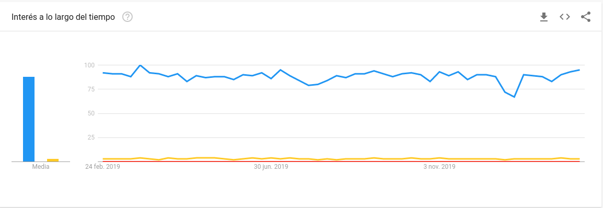

Evolving minds for fun and profit
Evolutionary computation for machine learning
@jjmerelo | JJ@GitHub
Amateur cook, coder, wordsmith
Professional professor @ UGR
What is artificial intelligence?
Fast tensor arithmetic
Done fast
Intelligence, evolved

Evolution is search
Learning is adaptation
...You can only climb a hill
You need to climb all hills